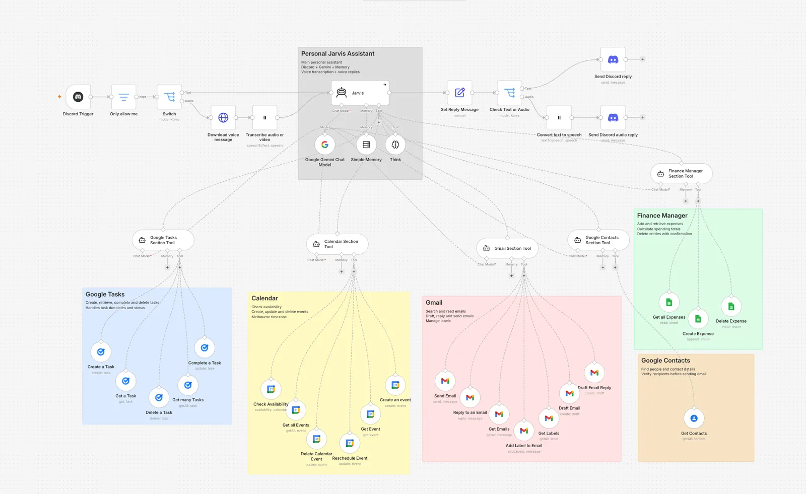

The problem
My email, calendar, to-do list, contacts and spending all live in different apps, and getting simple things done means jumping between them. I wanted one place I could just message, like texting a person, and have things happen. It started as a calendar-only assistant, and I kept adding specialists until it covered the rest.
My approach
Instead of one giant assistant that knows how to do everything, I built a small team. A main agent, Jarvis, chats with me and decides who should handle each request. Behind it are five specialists, and each one can only use its own tools.
- Email reads, searches, drafts, replies and labels in Gmail.
- Calendar checks availability and creates, moves and deletes events.
- Tasks creates, completes and deletes to-dos in Google Tasks.
- Contacts looks up verified email addresses and phone numbers.
- Finance logs and reports expenses in a Google Sheet.
Splitting the work this way keeps each agent's instructions short and focused, and it limits what any one agent can touch.
How it works
Every message goes through the same path, whether I type it or speak it.

Safety choices
Because this assistant can send email and delete things, I treated it like a security project as well as an automation one.
- Locked to me. A filter drops any message that doesn't come from my own Discord account.
- Least privilege. Each specialist only has the tools for its own job. The Email agent can't touch my calendar, and so on.
- Confirm before anything irreversible. It must show me the recipient, subject and message before sending an email, and ask before deleting an event, task or expense.
- Verify recipients. It looks up addresses in Contacts rather than guessing them.
- No made-up results. It's told never to claim something worked unless the tool confirmed it, and to say plainly when a step fails.
- A separate calendar. Events are created on a dedicated "AI" calendar, not my main one.
- Correct dates. n8n injects the current Melbourne date and time into every prompt, so "tomorrow" or "next Friday" is calculated from a real clock and not from the model's memory.
What it does
Ask "what's on my calendar tomorrow?", "log $18 for lunch", "remind me to submit the form on Friday", or "draft a reply to the last email from my lecturer", and it handles it, in text or by voice.
What I'd improve
Being honest about the limits is part of the project, and several of these come from my cybersecurity side.
- Enforce confirmations, don't just request them. Right now "ask before sending or deleting" is an instruction in the prompt. A model could ignore it, so I'd add a real approval step in n8n that blocks the action until I click confirm.
- Defend against prompt injection. The assistant reads emails, and an email could contain hidden instructions. I'd treat email content as untrusted data and limit what actions it can trigger.
- Safer deletes. Expense deletion works by row number, which could remove the wrong row if the sheet changes. Matching on a unique ID would be safer.
- Persistent memory and logging. Memory is a simple in-session buffer, so I'd move it to a database and add an audit log of every action the assistant takes.